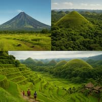

Laureen Diaz
About Me
Hello! I’m Laureen, but most people call me Wen. I’m a Mathematics teacher from the Philippines with a passion for numbers, learning, and meaningful connections. I enjoy exploring the beauty of math, immersing myself in music and K-dramas, playing board and card games, spending time with my family, and serving the Lord. Welcome to my space!
Philippines
The Philippines is a vibrant and welcoming country made up of more than 7,000 islands, each with its own unique charm. From the perfectly shaped Mayon Volcano and the mysterious Chocolate Hills of Bohol to the breathtaking Banaue Rice Terraces carved by ancient hands, the Philippines is rich in natural wonders and cultural heritage. It’s home to warm, resilient people who deeply value family, faith, and community. Here, simple joys are celebrated, and kindness is a way of life.